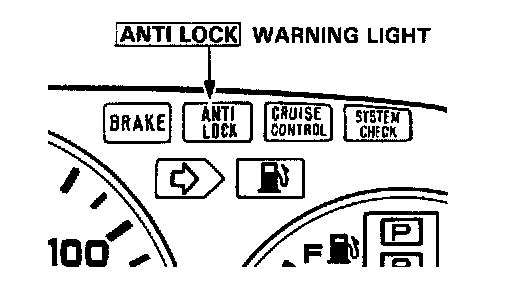

ABS Warning Light
ANTI LOCK Warning LightTemporary Driving Conditions:
1. The ANTI LOCK warning light will come on and the control unit memorizes the problem under certain conditions.
NOTE: Problem codes explained. DTC List - Antilock Brake System
- The tire(s) adhesion is lost due to excessive cornering speed.
Problem codes: 4-4, 4-8, 4-12.
- The vehicle loses traction when starting from a stuck condition on a muddy, snowy, or sandy road.
Problem code: 5.
- When the parking brake is applied for more than 30 seconds while the vehicle is being driven.
Problem code: 2.
- The vehicle is driven on extremely rough road.
The ALB system is OK, if the ANTI LOCK warning light goes off after the engine is restarted.

2. If you receive a customer's report that the ANTI LOCK warning light sometimes comes on, check the System using the ALB checker to confirm whether there is any trouble in the system. Function Checks
3. The ANTI LOCK warning light will come on and the LED will display a problem code when there is insufficient battery voltage to the control unit. An example would be when the battery is so weak that the car must be jump-started.
After the battery is sufficiently recharged, the ANTI LOCK warning light will work normally after the engine is stopped and restarted.
However, after recharging the battery, the LED problem code must be cleared from the control unit's memory by disconnecting the ALB 2 fuse for at least 3 seconds.
Warning Light Circuit:
1. The ANTI LOCK warning light does not go on when the ignition switch is turned on. Check the following items. If they are OK, check the control unit connectors.
If not loose or disconnected, install a new control unit and recheck:
- Blown ANTI LOCK warning bulb.
- Open circuit in YEL lead between No.5 fuse and combination meter.
- Open circuit in BLU/RED lead between combination meter and control unit.
- Loose component grounding of the control unit to the body.
2. The ANTI LOCK warning light remains ON or after the engine is started, however the LED on the control unit does not blink any code or sub-code, check for the following:
- Loose or poor connection of the wire harness at the control unit.
- Faulty ALB 2 fuse.
- Open circuit in WHT lead between ALB 2 fuse and control unit.
- Open circuit in YEL/BLK lead between fuse No.17 and fail safe relay(s).
- Open or short circuit in the YEL/GRN lead between fail safe relay(s).
- Short circuit in BLU/RED lead between combination meter and control unit.
- Open circuit in WHT/BLU lead between alternator and control unit.
If the problem is not found substitute a known good control unit and recheck whether the warning light remains ON.
Comes on and remains on while running:
1. Stop the engine.
2. Turn the ignition switch on and make sure that the ANTI LOCK warning light comes on.
3. Restart the engine and check the ANTI LOCK warning light.
- There is no problem in the ALB system, if the ANTI LOCK warning light goes off.
- Go to step 4, if the ANTI LOCK warning light remains on.
4. Stop the engine.
5. Open the trunk lid.
6. Turn the ignition switch on, but do not start the engine.
7. Record the blinking frequency of the LED on the control unit. The blinking frequency indicates the problem code.
NOTE:
- The control unit can indicate three problem codes (one, two or three problems).
- If the LED does not light, see Troubleshooting of Warning Light Circuit page 19-38.
- If you miscount the blinking frequency, turn the ignition switch off, then turn on to blink the LED again.
- The LED lights faintly after starting the engine as the control unit uses the LED circuit to intercommunicate between its internal computers.
- After the repair is completed, disconnect the ALB 2 fuse for at least 3 seconds to erase the control unit's memory. Then turn the ignition key on again and recheck.
- The memory is erased if the connector is disconnected from the control unit or the control unit is removed from the body